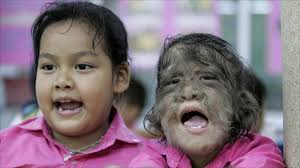
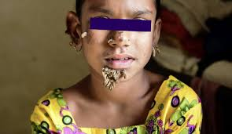

الصغحة الرئيسية
أنواع الأمراض
أسباب الأمراض
أسباب تزيد من المرض
علاج الأمراض
معلومات عن الامراض
https://ar.wikipedia.org/wiki/%D9%85%D8%AA%D9%84%D8%A7%D8%B2%D9%85%D8%A9_%D8%A8%D8%B1%D9%88%D8%AA%D9%8A%D9%88%D8%B3
https://ar.wikipedia.org/wiki/%D8%AE%D9%84%D9%84_%D8%A7%D9%84%D8%AA%D9%86%D8%B3%D8%AC_%D8%A7%D9%84%D9%84%D9%8A%D9%81%D9%8A_%D8%A7%D9%84%D9%85%D8%B9%D8%B8%D9%85_%D8%A7%D9%84%D9%85%D8%AA%D8%B1%D9%82%D9%8A
https://www.mayoclinic.org/ar/diseases-conditions/progeria/symptoms-causes/syc-20356038

https://www.webteb.com/articles/%D9%83%D9%8A-%D9%84%D8%A7-%D8%AA%D8%AA%D8%AD%D9%88%D9%84-%D8%A7%D9%84%D9%89-%D9%85%D8%B3%D8%AA%D8%B0%D8%A6%D8%A8_17546

https://altibbi.com/%D9%85%D8%B5%D8%B7%D9%84%D8%AD%D8%A7%D8%AA-%D8%B7%D8%A8%D9%8A%D8%A9/%D8%AA%D8%B4%D9%88%D9%87%D8%A7%D8%AA-%D8%AE%D9%84%D9%82%D9%8A%D8%A9/%D8%AE%D9%84%D9%84-%D8%AA%D9%86%D8%B3%D8%AC-%D8%A7%D9%84%D8%A8%D8%B4%D8%B1%D8%A9
https://www.mayoclinic.org/ar/diseases-conditions/sun-allergy/symptoms-causes/syc-20378077
https://www.mayoclinic.org/ar/diseases-conditions/porphyria/symptoms-causes/syc-20356066
تحت اشراف الاستاذه: سليمه الهاشميه
جميع الحقوق محفوظه لدى الطالبه: الين سالم المدهوشي ©